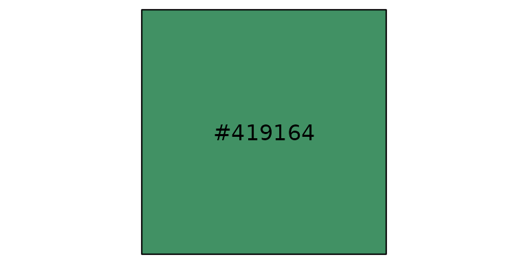
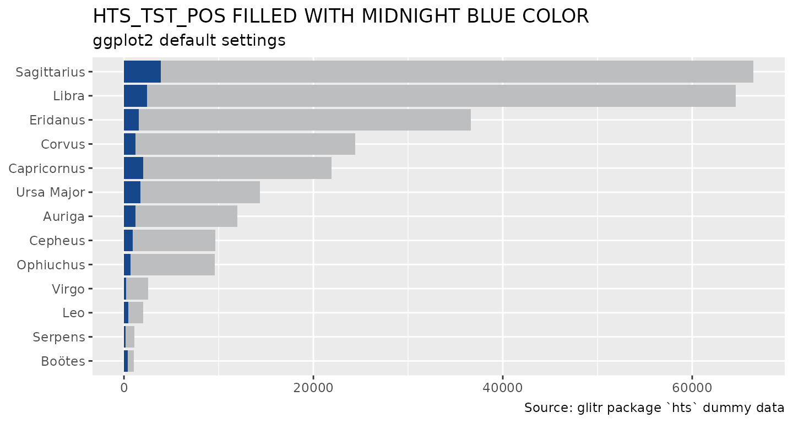
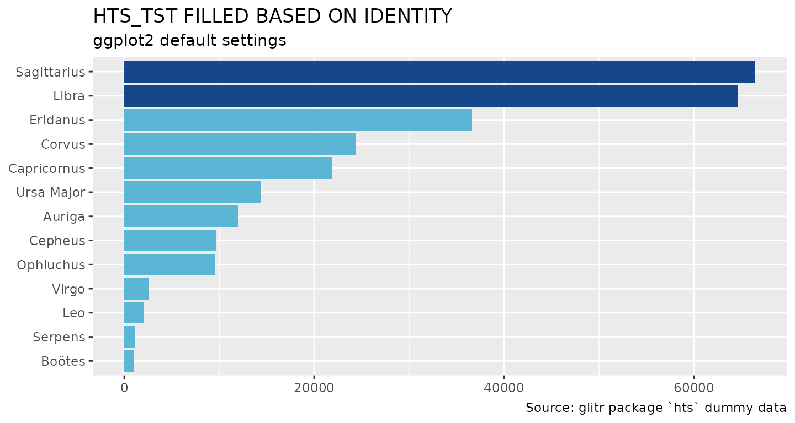
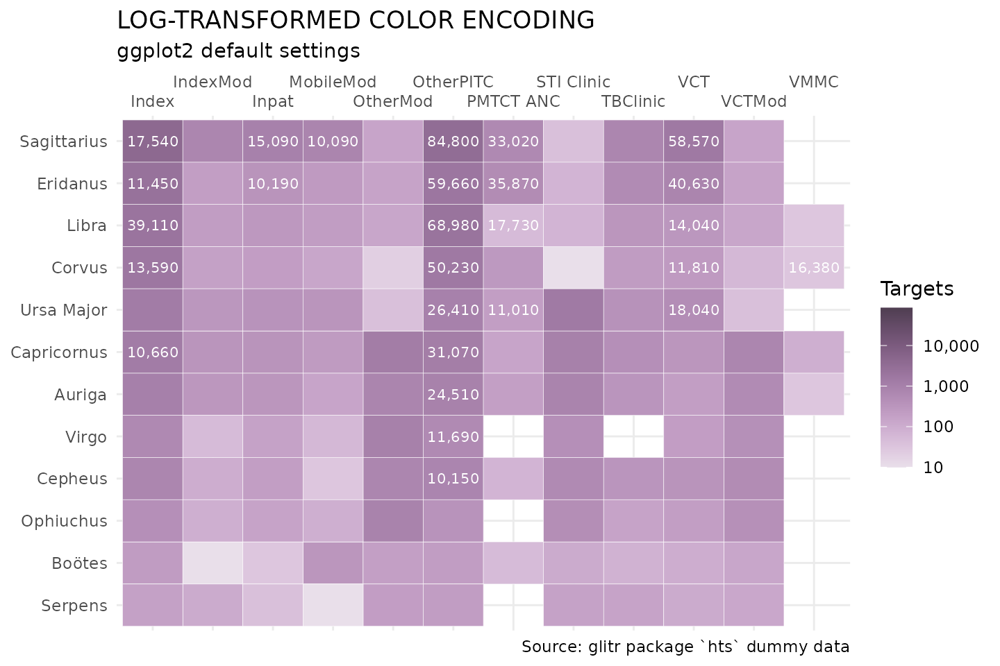
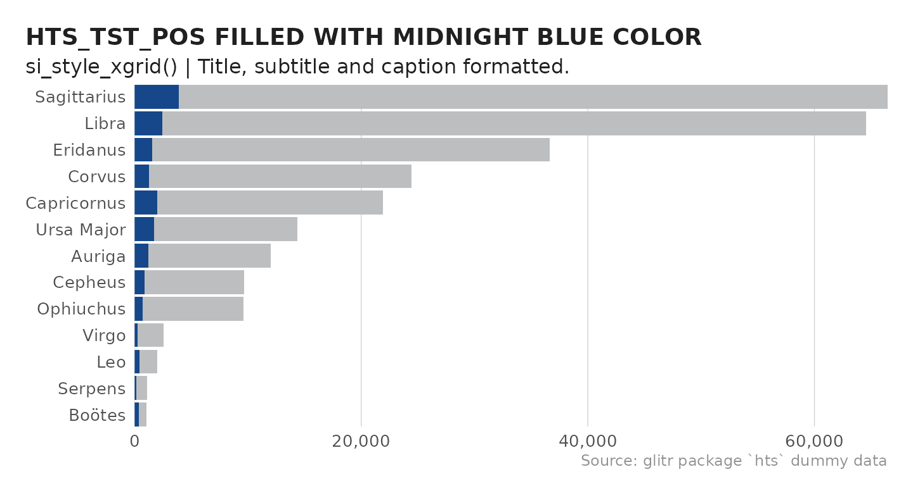
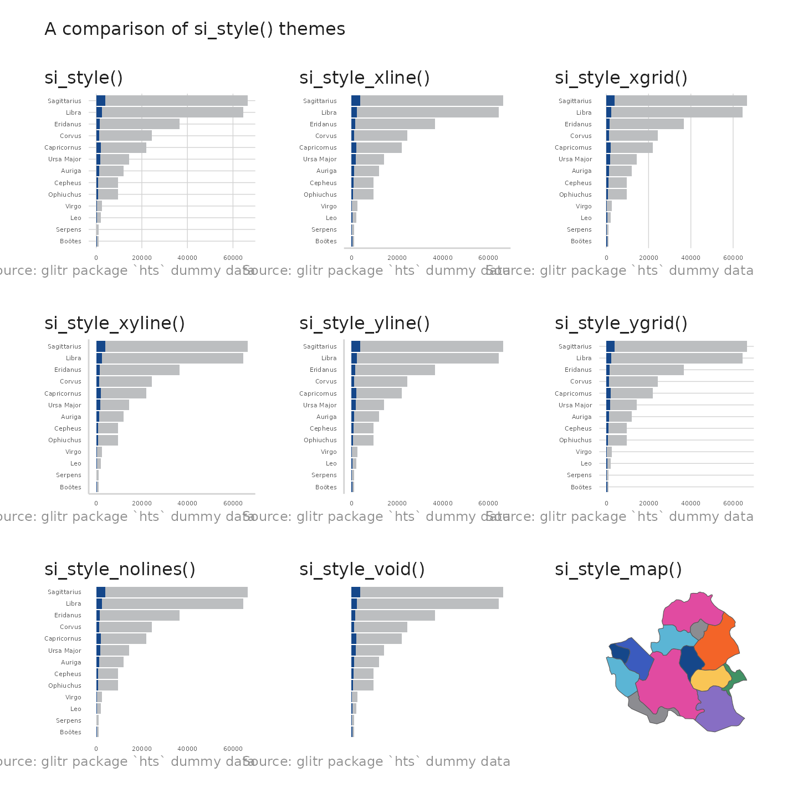

Introduction
This vignette provides best practices for applying OHA Data Viz
colors to visualizations using the glitr package.
Getting Started
To get started, load the standard OHA-SI libraries used in analysis.
library(dplyr)
library(tidyr)
library(forcats)
library(purrr)
library(ggplot2)
library(glitr)
library(systemfonts)
library(scales)
library(ggtext)
library(patchwork)
library(sf)
# Take a look at what's inside the package
ls('package:glitr')
#> [1] "%>%" "burnt_sienna"
#> [3] "burnt_sienna_light" "cascade"
#> [5] "color_caption" "color_gridline"
#> [7] "color_plot_text" "color_title"
#> [9] "denim" "denim_light"
#> [11] "electric_indigo" "electric_indigo_100"
#> [13] "electric_indigo_20" "electric_indigo_40"
#> [15] "electric_indigo_60" "electric_indigo_80"
#> [17] "genoa" "genoa_light"
#> [19] "golden_sand" "golden_sand_light"
#> [21] "grey10k" "grey20k"
#> [23] "grey30k" "grey40k"
#> [25] "grey50k" "grey60k"
#> [27] "grey70k" "grey80k"
#> [29] "grey90k" "hfr_mmd"
#> [31] "hts" "hts_geo"
#> [33] "hunter" "hunter_100"
#> [35] "hunter_20" "hunter_40"
#> [37] "hunter_60" "hunter_80"
#> [39] "hw_electric_indigo" "hw_hunter"
#> [41] "hw_lavender_haze" "hw_midnight_blue"
#> [43] "hw_orchid_bloom" "hw_slate"
#> [45] "hw_sun_kissed" "hw_tango"
#> [47] "hw_viking" "lavender_haze"
#> [49] "lavender_haze_100" "lavender_haze_20"
#> [51] "lavender_haze_40" "lavender_haze_60"
#> [53] "lavender_haze_80" "light_grey"
#> [55] "matterhorn" "midnight_blue"
#> [57] "midnight_blue_100" "midnight_blue_20"
#> [59] "midnight_blue_40" "midnight_blue_60"
#> [61] "midnight_blue_80" "moody_blue"
#> [63] "moody_blue_light" "nero"
#> [65] "old_rose" "old_rose_light"
#> [67] "orchid_bloom" "orchid_bloom_100"
#> [69] "orchid_bloom_20" "orchid_bloom_40"
#> [71] "orchid_bloom_60" "orchid_bloom_80"
#> [73] "pantone_aqua_sky" "pantone_blue_iris"
#> [75] "pantone_blue_turquoise" "pantone_cerulean"
#> [77] "pantone_chili_pepper" "pantone_classic_blue"
#> [79] "pantone_emerald" "pantone_fuchsia_rose"
#> [81] "pantone_greenery" "pantone_honeysuckle"
#> [83] "pantone_illuminating" "pantone_living_coral"
#> [85] "pantone_marsala" "pantone_mimosa"
#> [87] "pantone_mocha_mousse" "pantone_peach_fuzz"
#> [89] "pantone_radiant_orchid" "pantone_rose_quartz"
#> [91] "pantone_sand_dollar" "pantone_serenity"
#> [93] "pantone_tangerine_tango" "pantone_tigerlily"
#> [95] "pantone_true_red" "pantone_turquoise"
#> [97] "pantone_ultimate_gray" "pantone_ultra_violet"
#> [99] "pantone_very_peri" "pantone_viva_magenta"
#> [101] "scale_color_si" "scale_fill_si"
#> [103] "scooter" "scooter_light"
#> [105] "scooter_med" "si_clear_preview"
#> [107] "si_legend_color" "si_legend_fill"
#> [109] "si_palettes" "si_preview"
#> [111] "si_rampr" "si_save"
#> [113] "si_style" "si_style_map"
#> [115] "si_style_nolines" "si_style_transparent"
#> [117] "si_style_void" "si_style_xgrid"
#> [119] "si_style_xline" "si_style_xyline"
#> [121] "si_style_ygrid" "si_style_yline"
#> [123] "slate" "slate_100"
#> [125] "slate_20" "slate_40"
#> [127] "slate_60" "slate_80"
#> [129] "sun_kissed" "sun_kissed_100"
#> [131] "sun_kissed_20" "sun_kissed_40"
#> [133] "sun_kissed_60" "sun_kissed_80"
#> [135] "suva_grey" "tango"
#> [137] "tango_100" "tango_20"
#> [139] "tango_40" "tango_60"
#> [141] "tango_80" "trolley_grey"
#> [143] "trolley_grey_light" "usaid_black"
#> [145] "usaid_blue" "usaid_darkgrey"
#> [147] "usaid_lightblue" "usaid_lightgrey"
#> [149] "usaid_medblue" "usaid_medgrey"
#> [151] "usaid_red" "viking"
#> [153] "viking_100" "viking_20"
#> [155] "viking_40" "viking_60"
#> [157] "viking_80" "wapo_dblue"
#> [159] "wapo_dmauve" "wapo_dorange"
#> [161] "wapo_lblue" "wapo_lgreen"
#> [163] "wapo_lmauve" "wapo_lorange"
#> [165] "wapo_lorange2" "wapo_lpurple"
#> [167] "wapo_pushpop" "whisper"The package can be divided into three main parts
colors, that come as objects (such as
grey30korhunter),SI themes, that can be used to quickly apply SI plot defaults (family of
si_style*()functions), andhelper functions, that interpolate palettes or apply palettes to a visualization.
This vignette will focus on exploring colors and the SI themes.
Colors
A number of pre-defined colors come with the glitr
package. All objects starting with grey belong to a family
of gray colors where grey10k is the lightest and
grey90k the darkest. Objects starting with
usaid_ are the official USAID colors while those
starting with wapo_ are Washington Post inspired colors.
siei_ colors are largely out of style but included for
posterity.
color_denote objects that can be used to for filling in captions, gridlines, plot text or plot titles. The family ofcolor_`
objects follows the colors recommended in the style guide.
# Colors belonging to greys, usaid_, wapo_ or siei_.
grep("(grey|siei_|wapo_|usaid_)", ls('package:glitr'), value = T)
#> [1] "grey10k" "grey20k" "grey30k"
#> [4] "grey40k" "grey50k" "grey60k"
#> [7] "grey70k" "grey80k" "grey90k"
#> [10] "light_grey" "suva_grey" "trolley_grey"
#> [13] "trolley_grey_light" "usaid_black" "usaid_blue"
#> [16] "usaid_darkgrey" "usaid_lightblue" "usaid_lightgrey"
#> [19] "usaid_medblue" "usaid_medgrey" "usaid_red"
#> [22] "wapo_dblue" "wapo_dmauve" "wapo_dorange"
#> [25] "wapo_lblue" "wapo_lgreen" "wapo_lmauve"
#> [28] "wapo_lorange" "wapo_lorange2" "wapo_lpurple"
#> [31] "wapo_pushpop"The set of colors that is probably of most interest is the SIEI recommended colors. As you may recall from the Data Visualization Style Guide, the SI team has created nine core colors:
-
midnight_blue (#15478A)
-
viking (#5BB5D5)
-
slate (#8C8C91)
-
electric_indigo (#3B5BBE)
-
orchid_bloom (#E14BA1)
-
sun_kissed (#F9C555)
-
hunter (#419164)
-
lavender_haze (#876EC4)
-
tango (#F36428)
# Any of these colors can be called by typing in the name of the color.
# The `show_col` function is from the `scales` package and is a handy way to preview a color.
show_col(hunter)
show_col(c(electric_indigo, orchid_bloom, sun_kissed, hunter, lavender_haze, tango), borders = F, ncol = 6)To access the full list of discrete or continuous palettes, see the
si_palettes list or call the color palette directly using
the name (si_palettes$color_name).
- OHA color names with a
_dsuffix (formerly singular), e.g.midnight_blue_dorhunter_d, are categorical palettes based on suggested color pairs. - OHA color names with a
_csuffix (formerly plural), e.glavender_haze_corsun_kissed_c, are continuous palettes that can be applied to continuous variables. - OHA color names with a
_tsuffix, e.g.viking_tortango_t, are tints of the the base color broken out by roughly a 20% increase in lightness.
If you attempt to apply a discrete palette to a continuous variable, the color pairs will be recycled to the length of the vector you are attempting to encode.
# Returns the recommended paired colors with hunter as the base
si_palettes$hunter_d %>% show_col(labels = F, borders = F, ncol = length(si_palettes$hunter_d))
# Returns an set of vector of color values that increase the amount of lightness/white
si_palettes$hunter_t %>% show_col(labels = F, borders = F, ncol = length(si_palettes$hunter_t))
# Returns an interpolated vector of color values around the base hunter color
si_palettes$hunter_c %>% show_col(labels = F, borders = F, ncol = length(si_palettes$hunter_c))Finally, if you want to create a custom palette from one of the color
sets in the si_palettes list, you can do this using the
si_rampr() function.
# si_rampr takes a palette name and the number of interpolated colors (n) you wish to return as arguments.
tango_c_pal <- si_rampr(pal_name = "tango_c", n = 25)
tango_c_pal
#> [1] "#65331E" "#6F371F" "#793B20" "#833F22" "#8D4425" "#964828" "#A04D2B"
#> [8] "#A9532F" "#B25934" "#BA5F39" "#C2653E" "#CA6C44" "#D1734B" "#D87952"
#> [15] "#DE815A" "#E48962" "#EB916B" "#EF9975" "#F4A17F" "#F7AA8A" "#FAB396"
#> [22] "#FDBCA2" "#FDC5AF" "#FDCFBD" "#FDD9CB"
show_col(tango_c_pal, labels = F, borders = F)Applying Colors
To add any of these colors to a graph, pass them as arguments in a
ggplot2 call. We will work with one of the sample data sets
to create a bar graph where positive testing results are colored with
electric_indigo.
# Munge the hts data down to testing yields for a given year
hts_bar <-
hts %>%
filter(period == "FY50",
period_type == "cumulative") %>%
group_by(indicator, prime_partner_name) %>%
summarise(total = sum(value, na.rm = TRUE),
.groups = "drop") %>%
pivot_wider(names_from = indicator,
values_from = total,
names_glue = "{tolower(indicator)}") %>%
mutate(positivity = (hts_tst_pos / hts_tst),
prime_order = fct_reorder(prime_partner_name, hts_tst)) %>%
arrange(prime_order)
# Define testing results to be grey30k and positive results to be viking
# Play close attention to where the fill is placed in the geom_col() call.
# If placed inside the aesthetics, you will need to apply scale_fill_identity() to get the colors to render.
p <- hts_bar %>%
ggplot(aes(y = prime_order)) +
geom_col(aes(x = hts_tst), fill = grey30k) +
geom_col(aes(x = hts_tst_pos), fill = midnight_blue) +
labs(x = NULL, y = NULL, title = "HTS_TST_POS FILLED WITH MIDNIGHT BLUE COLOR",
subtitle = "ggplot2 default settings",
caption = "Source: glitr package `hts` dummy data")
p
Another way to use colors in plots is to assign color values to a new column in a data frame. For example, say we would like to highlight the two partners that have conducted the greatest number of tests. First, we will create a ranking variable that ranks partners by total testing. Then we will assign a set of colors based on the rankings.
# Create a rank column, then assign colors based on threshold (<=2)
hts_bar_rnkd <- hts_bar %>%
mutate(hts_rank = dense_rank(desc(hts_tst)),
rnk_color = case_when(
hts_rank <= 2 ~ midnight_blue,
TRUE ~ viking
)
)
hts_bar_rnkd %>% filter(hts_rank < 7)
#> # A tibble: 6 × 7
#> prime_partner_name hts_tst hts_tst_pos positivity prime_order hts_rank
#> <chr> <dbl> <dbl> <dbl> <fct> <int>
#> 1 Ursa Major 14360 1740 0.121 Ursa Major 6
#> 2 Capricornus 21920 2020 0.0922 Capricornus 5
#> 3 Corvus 24430 1240 0.0508 Corvus 4
#> 4 Eridanus 36620 1560 0.0426 Eridanus 3
#> 5 Libra 64580 2460 0.0381 Libra 2
#> 6 Sagittarius 66470 3870 0.0582 Sagittarius 1
#> # ℹ 1 more variable: rnk_color <chr>
# Assign colors to top two ranked prime partners and plot.
# Use the scale_fill_identity() to let ggplot2 know where fill is from.
hts_bar_rnkd %>%
ggplot(aes(y = prime_order, x = hts_tst, fill = rnk_color)) +
geom_col() +
scale_fill_identity() +
labs(x = NULL, y = NULL, title = "HTS_TST FILLED BASED ON IDENTITY",
subtitle = "ggplot2 default settings",
caption = "Source: glitr package `hts` dummy data")
To apply a continuous OHA palette to a visualization, you can use the
scale_fill_si() or scale_color_si() function.
In the example below, we create a heat map, using
geom_tile(), to show how testing targets vary across
modality.
hts_hm <- hts %>%
filter(period_type == "targets", period == "FY50") %>%
group_by(prime_partner_name) %>%
mutate(total_targets = sum(value, na.rm = T)) %>%
ungroup() %>%
mutate(partner_order = fct_reorder(prime_partner_name, total_targets))
hts_hm %>%
ggplot(aes(x = modality, y = partner_order, fill = value)) +
geom_tile(color = "white") +
scale_fill_si(palette = "lavender_haze_c", reverse = TRUE) +
labs(x = NULL, y = NULL,
title = "UNIMPRESSIVE HEAT MAP WITH HUNTER CONTINUOUS FILL",
subtitle = "ggplot2 default settings",
caption = "Source: glitr package `hts` dummy data")As is, this graphic is not too informative. Everything is a light
shade of lavender_haze_c. Why is this the case? If we were
to look at the distribution of the data, we would see that it skews
heavily toward 0. Many targets appear to be on the lower end, but a few
outliers are really mucking up the color encoding. We can do a couple
things to make this graphic more informative. Because the
scale_fill_si() function takes the ...
argument, we can pass a transformation option to the plot, as well as
define a new set of breaks.
# Log transform data, clean up legend, apply semi-transparency (alpha) and label
hts_hm %>%
ggplot(aes(x = modality, y = partner_order, fill = value)) +
geom_tile(color = "white") +
scale_fill_si(palette = "lavender_haze_c", alpha = 0.85, trans = "log",
breaks = c(1 * 10^(1:5)), reverse = TRUE,
labels = comma,
name = "Targets") +
labs(x = NULL, y = NULL, title = "LOG-TRANSFORMED COLOR ENCODING",
subtitle = "ggplot2 default settings",
caption = "Source: glitr package `hts` dummy data"
) +
geom_text(aes(label = ifelse(value > 10000, comma(value), NA_real_)),
size = 8/.pt, family = "Source Sans Pro", color = "white",
na.rm = TRUE) +
scale_x_discrete(guide = guide_axis(n.dodge = 2), position = "top") +
theme_minimal()
SI Themes
In order to create visualizations that appear to belong to the same
family (Think
Baldwin Brothers), glitr includes nine ggplot themes
that simplify a plot down to its core elements. At the base of these
themes is the si_style().
{kind=link}
grep("(si_style)", ls('package:glitr'), value = T)
#> [1] "si_style" "si_style_map" "si_style_nolines"
#> [4] "si_style_transparent" "si_style_void" "si_style_xgrid"
#> [7] "si_style_xline" "si_style_xyline" "si_style_ygrid"
#> [10] "si_style_yline"We can see how this differs from the default ggplot2 theme by applying the theme to the plot above.
You will notice the si_style strips the background gray color and
converts the grid lines to a light shade of gray. As this plot is
oriented horizontally, we can remove the extra y gridlines by using the
si_style_xgrid theme. All of the si themes also come with
pre-formatted titles, subtitles, and captions following the style guild
standards.
p +
si_style_xgrid() +
scale_x_continuous(labels = comma) +
labs(caption = "Source: glitr package `hts` dummy data",
subtitle = "si_style_xgrid() | Title, subtitle and caption formatted.") +
coord_cartesian(expand = F) # Move names closer to y-axis
Comparing Themes
Below is a summary graphic showing all the available SI themes.
# Create a list of all themes to loop over
theme_list <- list('si_style()' = si_style(),
'si_style_xline()' = si_style_xline(),
'si_style_xgrid()' = si_style_xgrid(),
'si_style_xyline()' = si_style_xyline(),
'si_style_yline()' = si_style_yline(),
'si_style_ygrid()' = si_style_ygrid(),
'si_style_nolines()' = si_style_nolines(),
'si_style_void()' = si_style_void()
)
# Custom plot function to incorporate themes
custom_plot <- function(x) {
p + {{x}}
}
# Make all the plots
plots <- map2(theme_list, names(theme_list), ~custom_plot(.x) +
labs(subtitle = paste(.y), title = NULL) +
theme(axis.text = element_text(size = 12/.pt)))
# Create a sample map
hts_map <- hts_geo %>%
ggplot() +
geom_sf(aes(fill = prime_partner_name)) +
si_style_map() +
scale_fill_si(palette = "siei", discrete = T) +
theme(legend.position = "none") +
labs(subtitle = 'si_style_map()')
reduce(plots, `+`) +
hts_map +
plot_annotation(subtitle = "A comparison of si_style() themes",
theme = si_style()) +
plot_layout(ncol = 3)